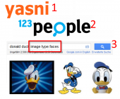

Starte Applikation
Youtube Demo
Hilf dir und deinen Freunden:
- Privatsphäreeinstellungen von dir und Freunden checken: Haben du / deine Freunde "öffentliche Suche" in Facebook abgestellt?
- Clickjacking Attacken erkennen: Zeige alle deine "Likes" / alle "Likes" von Freunden an und ob diese das Überbleibsel einer Clickjacking Attacke sind (en.wikipedia.org/wiki/Clickjacking).
- Was weiß das Internet über mich und meine Freunde?: Hole direkt Suchergebnisse aus Google und Personensuchmaschinen über dich / deine Freunde, finde heraus was das Internet weiß.

- Identitätsdiebstahl: Lass die App überprüfen, ob sich unter deinen Freunden doppelte Namen befinden.
- Hilf deinen Freunden: Hole Suchergebnisse über sie direkt in die App.

1. fordert jede App auf Facebook, selbst wenn der Entwickler die Daten gar nicht braucht...
2. Erlaubnis an die Pinnwand zu posten. Pinnwand lesen ist nicht mögilch (dazu braucht man ein anderes Recht).
3. Wird genutzt um zu sehen ob du geclickjacked wurdest
4. Wie 3. nur für deine Freunde.
Überprüfe die Rechte selbst: developers.facebook.com/docs/authentication/permissions/.
I fordere mit meiner App nur die Rechte: publish_stream,user_likes und friends_likes.
Mehr Information über Facebook Security: clickjacked.org.